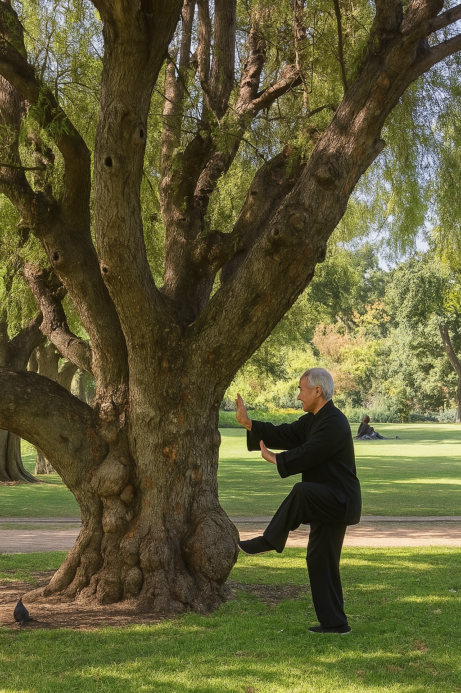

Tai Chi
Tradicional
Arte marcial interno chino para el equilibrio, la salud y la serenidad mental.


Tai Chi Santiago
Arte Marcial Tradicional
Arte marcial interno chino para el equilibrio, la salud y la serenidad mental.

El Tai Chi es un sistema completo de movimiento consciente que integra posturas marciales, respiración profunda y meditación. Cada gesto fluye con propósito, creando armonía entre cuerpo y mente.
Mejora la alineación corporal y el balance en cada movimiento.
Entrena la atención plena y la memoria kinestésica.
Calma el sistema nervioso y reduce el estrés.
Respaldado por estudios científicos y reconocido por la UNESCO como Patrimonio Cultural Inmaterial.
Transmisión directa del conocimiento tradicional a través de una cadena ininterrumpida de maestros.
Nuestros instructores han sido formados en el estilo Yang tradicional, manteniendo una línea directa de transmisión con grandes maestros de China, Latinoamérica y Europa.

Tutoriales gratuitos para comenzar tu práctica de Tai Chi.
Clase completa de iniciación al Tai Chi.
Secuencia para calma y conexión.
Práctica para reducir el estrés.
📍 Teno 8787, Santiago de Chile
Clases personalizadas en grupos reducidos. Horarios flexibles mañana y tarde. Seguimiento continuo por WhatsApp.
Agenda tu Clase de Prueba